Single-image super-resolution (SISR) remains challenging due to the inherent difficulty of recovering fine-grained details and preserving perceptual quality from low-resolution inputs. Existing methods often rely on limited image priors, leading to suboptimal results. We propose a novel approach that leverages the rich contextual information available in multiple modalities --including depth, segmentation, edges, and text prompts -- to learn a powerful generative prior for SISR within a diffusion model framework. We introduce a flexible network architecture that effectively fuses multimodal information, accommodating an arbitrary number of input modalities without requiring significant modifications to the diffusion process. Crucially, we mitigate hallucinations, often introduced by text prompts, by using spatial information from other modalities to guide regional text-based conditioning. Each modality's guidance strength can also be controlled independently, allowing steering outputs toward different directions, such as increasing bokeh through depth or adjusting object prominence via segmentation. Extensive experiments demonstrate that our model surpasses state-of-the-art generative SISR methods, achieving superior visual quality and fidelity.
Photo of a stained-glass ceiling, circular composition. The ceiling features a radiating pattern of yellow, white, and gray stained glass panels. Dark brown central element acts as a focal point. The style is Art Nouveau, detailed lines, and intricate design.
Photo of a stained-glass ceiling, circular composition. The ceiling features a radiating pattern of yellow, white, and gray stained glass panels. Dark brown central element acts as a focal point. The style is Art Nouveau, detailed lines, and intricate design.
Photo of a large wooden building with a steeply pitched roof, multiple levels, and numerous balconies adorned with hanging flowers. The building is constructed primarily of light brown wood with a stone base, exhibiting traditional Romanian architecture. People are visible near the bottom of the building, providing a sense of scale. The photo is taken from a low angle, showcasing the full height and grandeur of the structure against a clear sky.
Photo of a baseball stadium scoreboard, close-up view. The image shows the words "CIPAL PARK" prominently displayed on a metal structure above various advertisements including Bud Light and Coca-Cola. Below the main sign are several smaller screens displaying baseball action and other promotional material. The overall composition is centered on the stadium signage against a blurred background of netting and sky.
Photo of skyscrapers viewed from below, black and white. The image features three tall buildings, two on the sides and one dominating the lower half. The composition is symmetrical, with the buildings framing a bright white sky. The style is minimalist, emphasizing geometric lines and textures.
Photo of two surfers on a grassy cliff overlooking a black sand beach. The surfers are positioned slightly off-center, each carrying a white surfboard. The dark volcanic sand contrasts sharply with the white surf and green grass. The ocean waves are visible in the upper portion of the image creating a clear horizon line.
*See paper and supplementary material for experimental settings.
Language models struggle to accurately represent spatial information, leading to coarse and imprecise image super-resolution. To overcome this limitation, we incorporate additional spatial modalities like depth maps and semantic segmentation maps. These modalities provide detailed spatial context, allowing our model to implicitly align language descriptions with individual pixels through a transformer network. This enriched understanding of the image significantly enhances the realism of our super-resolution results and minimizes distortion.
Starting with a low-resolution (LR) image, we extract modalities like depth and semantic segmentation maps. These modalities are encoded into tokens and transformed into multimodal latent tokens ($m$). Our diffusion model uses these tokens and the LR input to generate a high-resolution (SR) output. A multimodal classifier-free guidance m-cfg refines the SR image for enhanced quality.

| Inputs | Outputs | ||||||
|---|---|---|---|---|---|---|---|
| 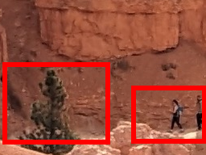 |
Two people walk along a narrow path carved into the
reddish-orange sandstone cliffs. A small evergreen tree grows in the foreground near the base of
the cliff \dots
|

|
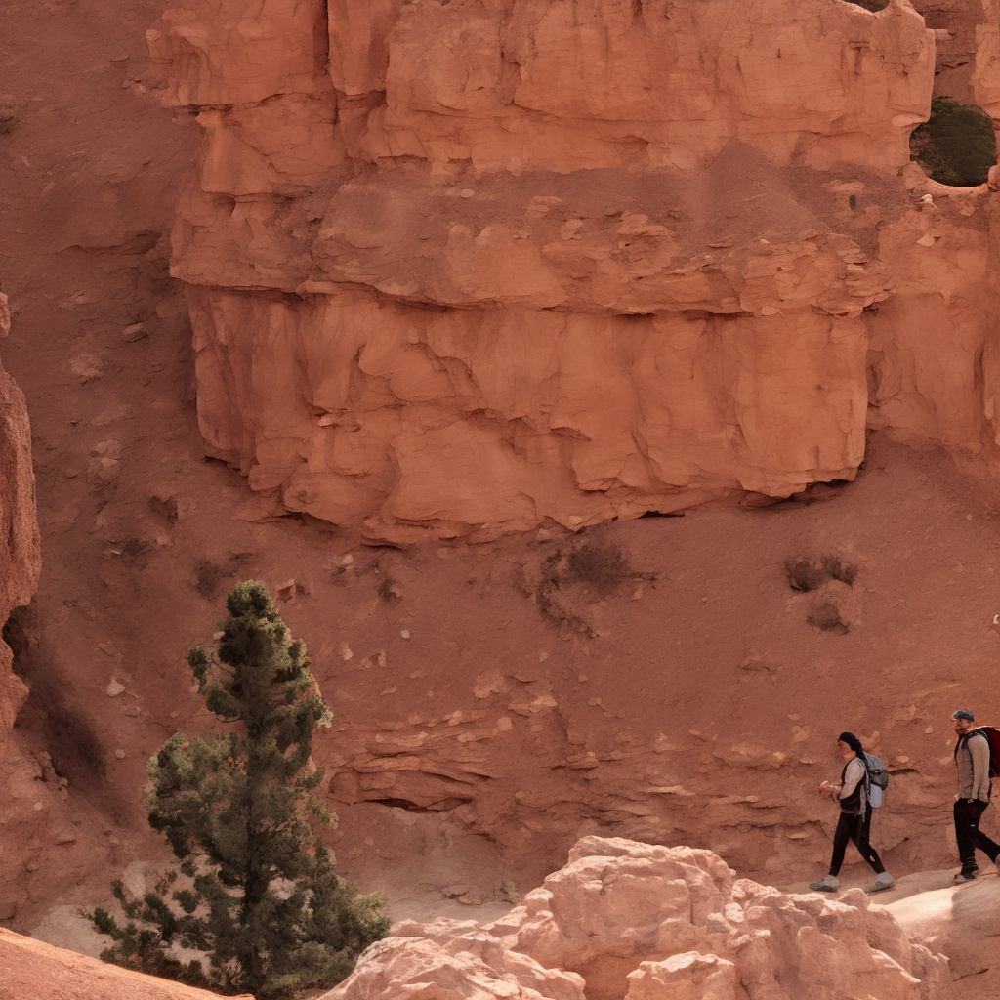 | 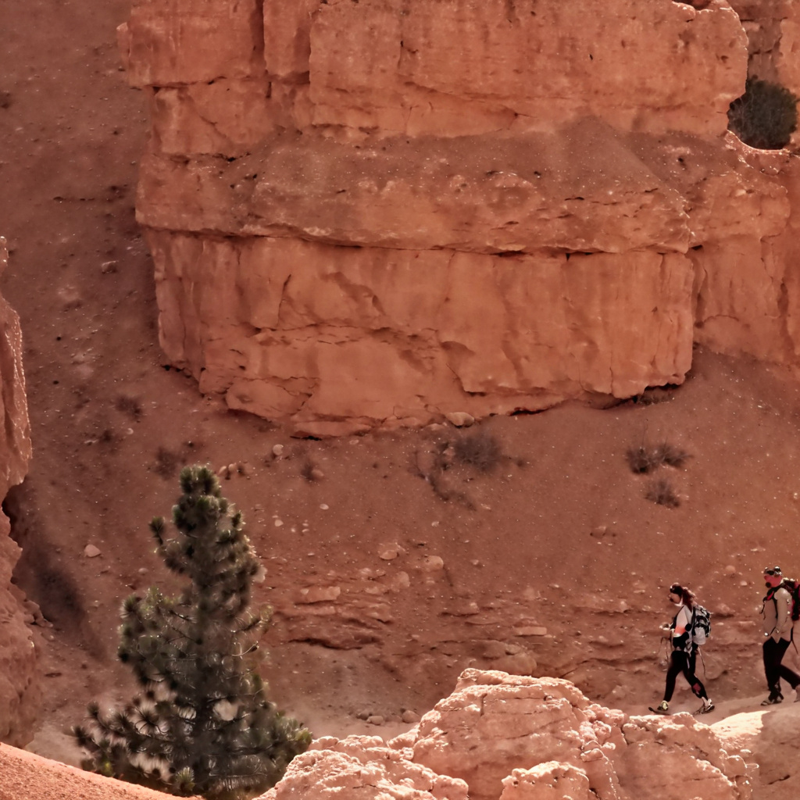 | 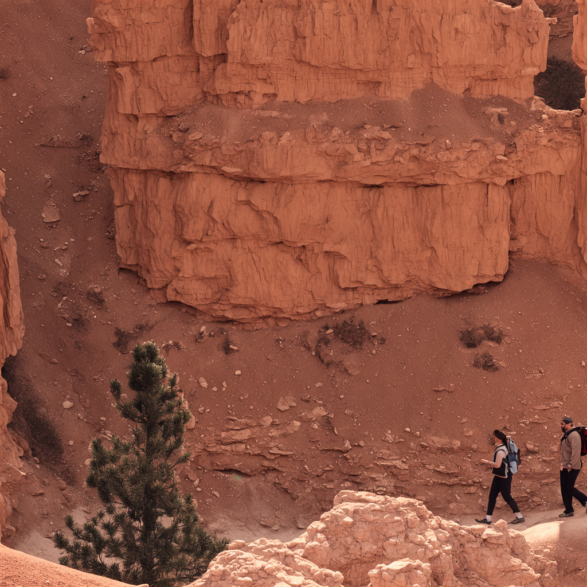 | ||
| LR | Caption | Patch 1 | PASD (Zoomed) | SeeSR (Zoomed) | SUPIR (Zoomed) | MMSR (Zoomed) | |
| 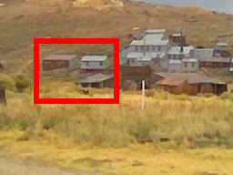 |
Photo of a mining town nestled on a hillside, autumnal
colors. The buildings are predominantly low-slung structures with metal roofs, some \dots
|
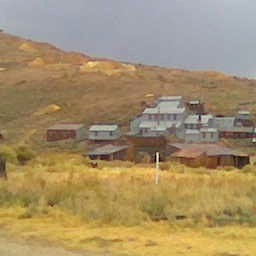 | 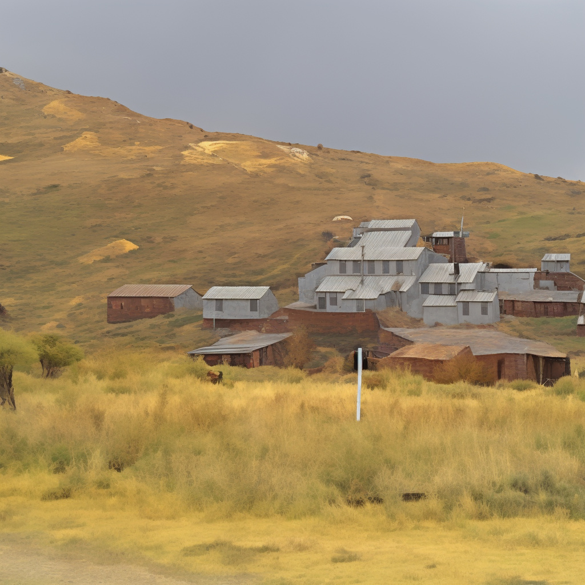 | 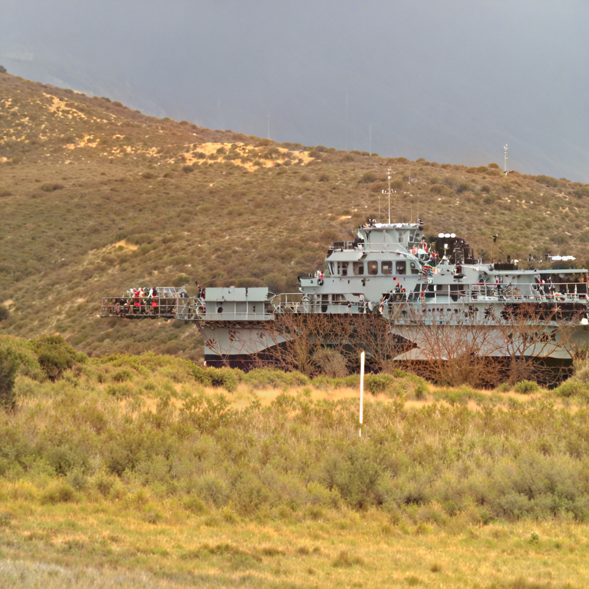 | 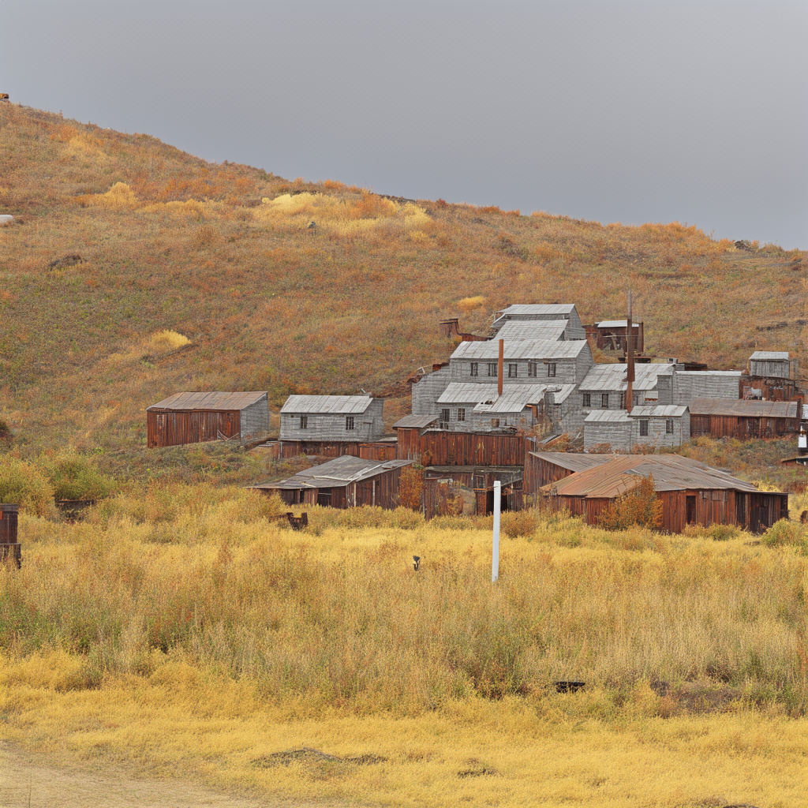 | ||
| LR | Caption | Patch 1 | PASD (Zoomed) | SeeSR (Zoomed) | SUPIR (Zoomed) | MMSR (Zoomed) | |
| 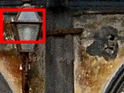 |
Photo of a weathered exterior wall detail, grunge, aged. A
rusty metal lamp is mounted on a dark vertical beam against a crumbling ochre and brown stucco
wall \dots
|
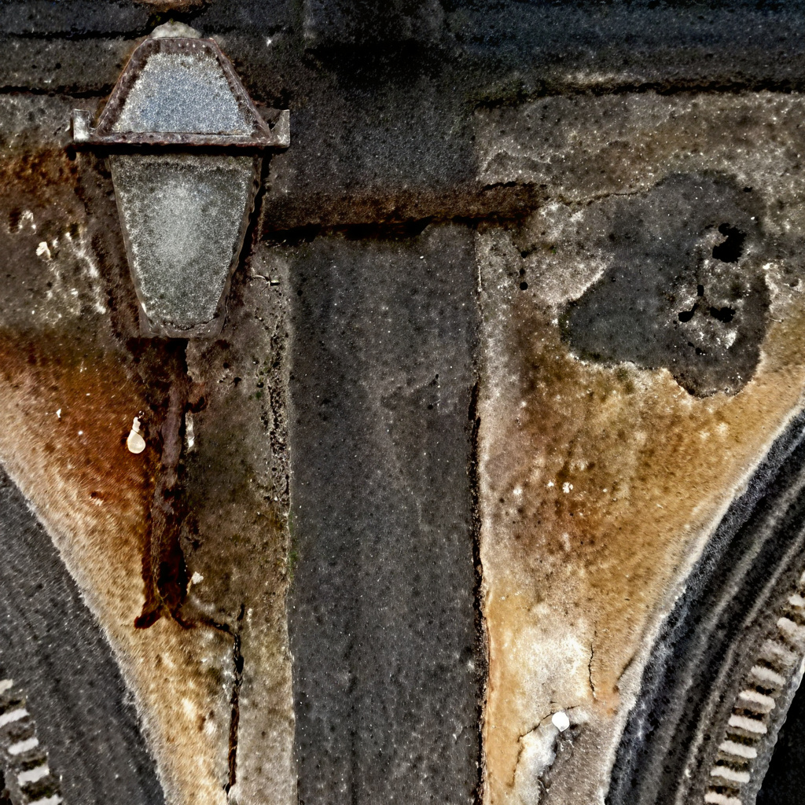 | |||||
| LR | Caption | Patch 1 | PASD (Zoomed) | SeeSR (Zoomed) | SUPIR (Zoomed) | MMSR (Zoomed) | |
| 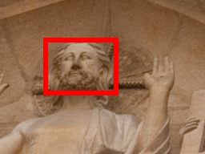 |
Photo of a high-detail stone sculpture, sepia toned. The
sculpture depicts Jesus Christ seated, his hands raised in a gesture of blessing \dots
|
 |
|||||
| LR | Caption | Patch 1 | PASD (Zoomed) | SeeSR (Zoomed) | SUPIR (Zoomed) | MMSR (Zoomed) | |
Severely degraded, low-resolution (LR) images can produce inaccurate multi-modal information, manifesting as distorted edges, misidentified objects, and other artifacts. To further illustrate the robustness, the figure below shows the behavior of each method and strategy on different qualities of LR images, as measured by MUSIQ.

Even when inaccurate multi-modal information occurs in low MUSIQ LR images, our method with LR pre-processing still achieves stable SR performance, as quantified by the smallest slope and large y-offset in the scattering points. This demonstrates MMSR stability with low-quality LR images.
Quantitative comparison with state-of-the-art methods on both synthetic and real-world benchmarks. The best and second best results of each metric are highlighted in red and blue, respectively.
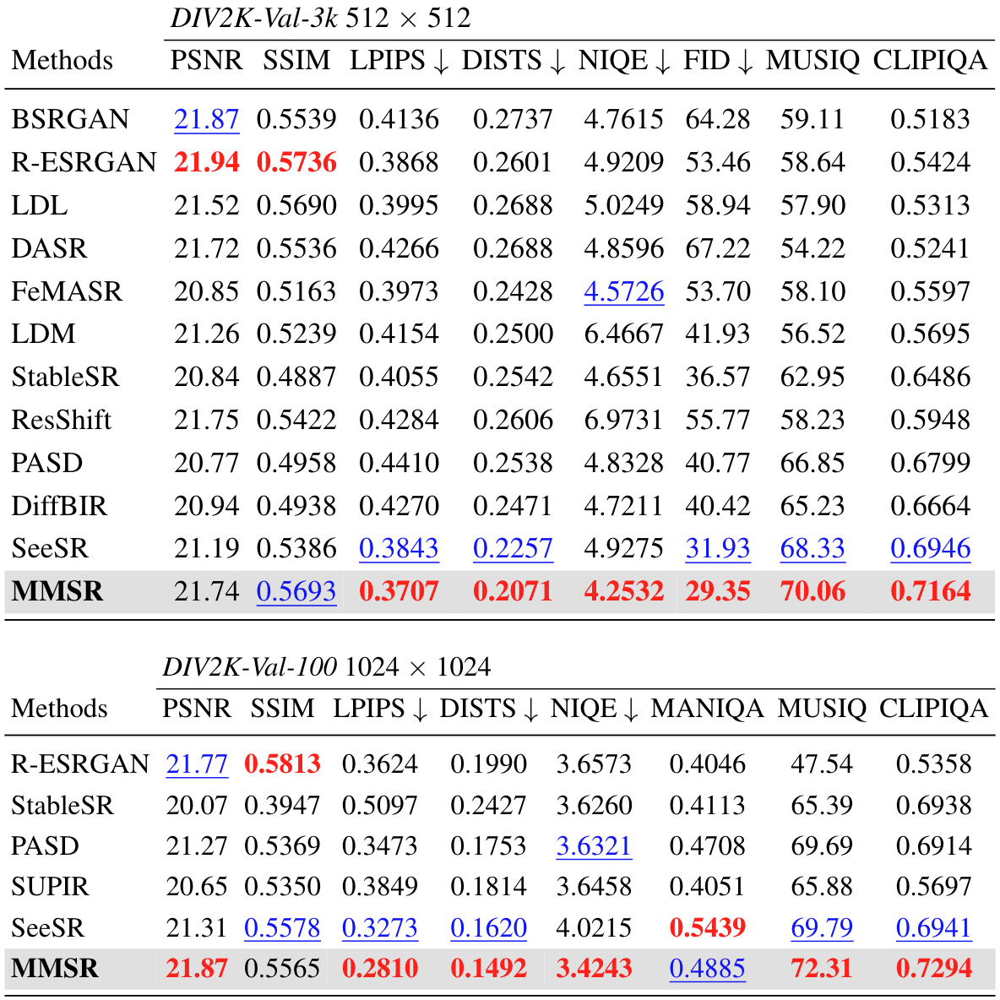 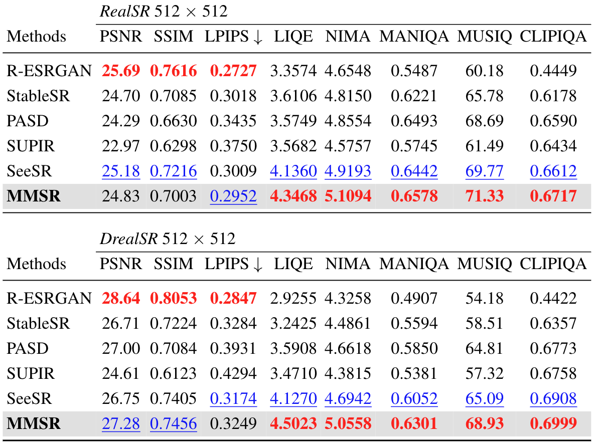Our method allows for fine-grained control over super-resolution results by adjusting the influence of each input modality. For example, reducing the edge temperature enhances edge sharpness (first row). Lowering the segmentation temperature emphasizes distinct features, such as the star pattern on the flag (second row). Decreasing the depth temperature accentuates depth-of-field effects, like the bokeh between the foreground and background (third row).
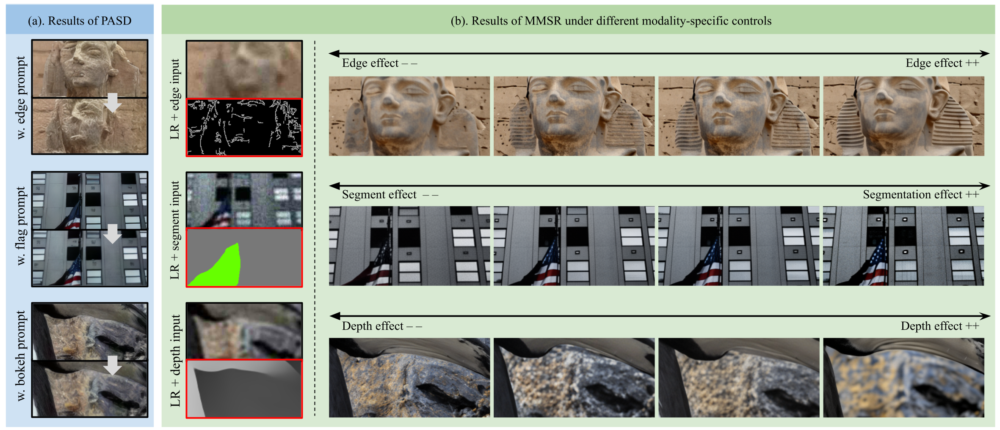
@inproceedings{mei2025mmsr,
title={The Power of Context: How Multimodality Improves Image Super-Resolution},
author={Mei, Kangfu and Talebi, Hossein and Ardakani, Mojtaba and Patel, Vishal M and Milanfar, Peyman and Delbracio, Mauricio},
year={2025},
booktitle={Proceedings of the IEEE/CVF Conference on Computer Vision and Pattern Recognition},
}